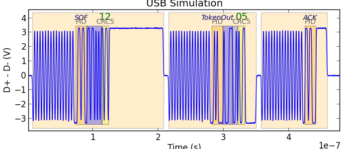

Ripyl protocols¶
The Ripyl library supports a number of protocols for decoding. Protocol decoders can be layered on top of each other. This creates a distinction between base level decoders that operate on raw sample or edge data and higher level decoders that work with the results of a lower level decoder.
The base protocols provided with Ripyl are the following:
- Automotive
- CAN
- J1850 (Both VPW and PWM variants)
- LIN
- ISO K-line (ISO 9141 and ISO 14230)
All base level protocols in the library have functions to support the synthesis of arbitrary waveforms. This can be useful for testing or recreating special circumstances that would be challenging to perform with real hardware.
The higher level protocols provided with Ripyl are:
- I2C transaction
- LM73 temperature sensor (SMBus)
- OBD-2 automotive ECU message format
- USB transaction
The protocol decoders do not check timing parameters to verify that they meet specifications. The emphasis is on getting usable data out of waveforms even if they depart from requirements.

Ethernet¶

Start of 10base-T frame |

End of 10base-T frame |
The ethernet module decodes the Ethernet protocol. It supports 10base-T encoding and frames with 802.1Q and 802.1ad tags.
I2C¶

The i2c module decodes the I2C and SMBus protocols. This module includes a reconstruct_i2c_transfers() function that can group decoded I2CAddress and I2CByte objects into messages.
ISO K-line (ISO 9141 and ISO 14230)¶

The iso_k_line module decodes the ISO 9141 and ISO 14230 (KWP2000) automotive protocols. It supports slow and fast init sequences and 3 or 4-byte headers.
J1850¶

VPW protocol |

PWM protocol |
The j1850 module decodes the J1850 automotive protocols. Both the 10.4Kbps Variable Pulse Width (VPW) and 41.6Kbps Pulse Width Modulation (PWM) variants are supported.
LIN¶

The lin module decodes the LIN (Local Interconnect Network) automotive protocol. It supports LIN 1.3 and 2.x style checksums.

NEC Infrared¶

Modulated NEC protocol |

Unmodulated NEC protocol |
The nec module decodes the NEC infrared protocol. It supports modulated (38kHz) and unmodulated input signals. It can decode the original protocol with an 8-bit address and the extended variant with a 16-bit address.

Philips RC-5 Infrared¶

The rc5 module decodes the Philips RC-5 infrared protocol. It supports modulated (36kHz) and unmodulated input signals. This decoder supports the original RC-5 protocol (6 command bits) and the RC5X extension (7 command bits).
Philips RC-6 Infrared¶

The rc6 module decodes the Philips RC-6 infrared protocol. It supports modulated (36kHz) and unmodulated input signals. The full RC-6 protocol is not publicly documented. This decoder only supports mode-0 and partially supports mode-6 (RC6A).
Sony SIRC Infrared¶

The sirc module decodes the Sony SIRC infrared protocol. It supports modulated (40kHz) and unmodulated input signals. All three command formats are supported: 12-bit, 15-bit, and 20-bit.
SPI¶

The spi module decodes the SPI and Microwire protocols. The chip select signal is optional. It only decodes a single data line (MISO or MOSI) at a time. To handle both you must run the decoder twice and merge the decoded StreamRecord objects together.
UART¶

The uart module decodes asynchronous serial protocols. It provides automatic baud rate detection and flexible configuration for varying protocol parameters. It only decodes a single data line (txd or rxd) at a time. To handle both you must run the decoder twice and merge the decoded StreamRecord objects together.
USB 2.0¶

Full-speed USB (12Mb/s, differential probing) |

High-speed USB (480Mb/s, differential probing) |
{kind=link}
The usb module decodes USB 2.0 and HSIC protocols. This module provides full support for USB 2.0 including all three bus speeds (1.5, 12, and 480 Mb/s), extended packets, and mixed Full-speed and Low-speed packets. The decoder works with data collected from separate single-ended probes on the D+ and D- channels as well as that collected with a differential probe across D+ and D-. Bus speed is automatically detected.

Mixed Full (12Mb/s) and Low (1.5Mb/s) speed packets as in USB 1.1

High-speed USB (single-ended probing)
HSIC¶

The USB decoder also provides support for the HSIC variant with single-ended strobe and data signals in place of the normal D+ and D- signals.
USB transactions¶
The usb_transact module groups the packets generated by the USB and HSIC decoders into transactions.